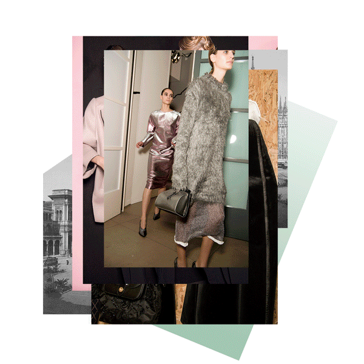
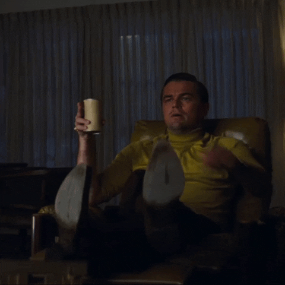
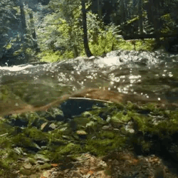

ANIME
Veel mensen begrijpen het medium simpelweg niet en doen het af als iets voor kinderen, maar anime is zoveel meer dan een simpele cartoon. Het is in essentie een hyper-visuele, stimulerende manier om diepe informatie en complexe narratieven te verpakken. Wanneer je anime stript tot de kern, zie je dat het draait om krachtige morele waarden en universele, heroïsche archetypen die je nergens anders op deze manier leert. Het opent deuren naar gigantische werelden en epische avonturen gevuld met actie, horror, mysteries, romance en comedy. Maar tegelijkertijd herbergt het de rust van slice of life, waarin het alledaagse leven prachtig wordt gevierd.
Er zit voor iedereen wel iets in: het helpt je een nieuwe passie te ontdekken of je eigen verbeelding pas écht te begrijpen. Anime raakt ons op plekken die we soms vergeten waren; het brengt pure nostalgie, geeft ons situaties waarin we onszelf herkennen, en biedt troost wanneer we dat nodig hebben. Het is een medium dat je laat lachen, laat huilen, en je met gezonde spanning laat aftellen naar de volgende release.
My Favorites: Attack on Titan, Naruto, and Death Note

FASHION
Wanneer je fashion strategisch en puur gebruikt, is het de ultieme confidence boost. Het is een manier om uit te drukken wat je met woorden niet kunt zeggen, een bron van innerlijke rust en—voor mij persoonlijk—een absolute superkracht. Maar kleding is ook een diep psychologisch schaakspel. In de jaren '50 verkende socioloog Erving Goffman dit al met zijn theorie over The Presentation of the Self. Hij legde uit hoe we in het dagelijks leven constant sociale rollen performen en non-stop de impressie managen die we op anderen achterlaten. Dit is meestal geen kille berekening, maar een volledig onbewust proces waarin we non-verbale cues gebruiken om ons imago te bouwen—en kleding is een van de luidste cues die we hebben.
Socioloog Georg Simmel vulde dit aan door te stellen dat fashion altijd balanceert in een spagaat tussen twee tegenstrijdige verlangens: de drang om ergens bij te horen, en de drang om keihard op te vallen als individu. Vandaag de dag is die dynamiek interessanter dan ooit. We cureren niet meer alleen ons fysieke zelf, maar ook ons digitale zelf. Door de non-stop stroom aan online content vervagen de grenzen tussen wat we oprecht zélf vet vinden, en wat ons subtiel wordt opgedrongen door marketing en algoritmes. Mode is een van de oudste talen die de mensheid rijk is; een rauw statement van identiteit en ambitie, constant in beweging en gevormd door de wereld om ons heen.
My Inspo: A$AP Rocky, Rick Owens, and Travis Scott.

CINEMA
Cinema bezit de unieke superkracht om onze blik te verruimen en ons de wereld te laten zien door de ogen van een ander. Het dwingt me om culturele verschillen te respecteren en te waarderen, maar tegelijkertijd toont het juist onze diepe, gedeelde menselijkheid. Hoe verschillend onze achtergrond of afkomst ook is, op het witte doek zie je hoe hard we in de basis op elkaar lijken. In het donker van de bioscoopzaal lachen we samen en voelen we samen—dat is de pure magie van deze kunstvorm.
Er is een legendarische Franse uitspraak die dit perfect samenvat: "Le cinéma, c’est l’art de faire rêver les gens éveillés"—film is de kunst om mensen te laten dromen terwijl ze klaarwakker zijn. Het mooiste aan cinema vind ik de films die je zo diep raken dat ze je hele perspectief permanent shiften. Het type film dat zo intens is dat je het eigenlijk maar één keer in je leven hoeft te zien om het voor altijd in je ziel te prenten.
My Favorites: Moonlight, Waves and parasite

NATURE
Vincent van Gogh schreef ooit: "If you truly love nature, you will find beauty everywhere." Maar als je er dieper over nadenkt, is 'natuur' slechts een door mensen bedacht woord voor de som van alles wat bestaat. Wanneer ik kijk naar de huidige klimaatcrisis, zie ik in de kern geen ecologisch probleem, maar een diepe crisis van menselijke isolatie en psychologische afscheiding. Onze hele wereld en al onze ervaringen worden gedefinieerd door de taal die we spreken.
Taal is hoe we betekenis geven aan de realiteit, en we hebben de fout gemaakt om onze relatie tot de aarde taalkundig zo te definiëren dat 'natuur' staat voor alles behalve de mens. Die fundamentele, talige splitsing heeft geleid tot de enorme breuk met onze planeet. Ik geloof dat we de natuur dringend moeten herdefiniëren, op een manier waarin de mens weer onlosmakelijk onderdeel is van het grotere geheel. Ons eigen lichaam, onze anatomie, is immers een directe, organische reflectie van de natuur om ons heen.

MUSIC
Muziek is een flow, een pure, rauwe energie en een grenzeloze taal die door iedereen ter wereld begrepen en gedeeld kan worden. Het omzeilt de ratio en spreekt direct tot het gevoel.
De legendarische componist Leonard Bernstein legde dit ooit fantastisch uit: muziek gaat niet over concrete 'dingen' of verhalen, muziek is de pure definitie van menselijke emotie. Het pikt de draad op waar woorden simpelweg tekortschieten en niet meer toereikend zijn.
Net als de golven in de oceaan of de wind in de bomen, beweegt muziek in onzichtbare frequenties door de ruimte. Het is de universele soundtrack die de chaos in mijn hoofd ordent, mijn ritme bepaalt, en mijn pen over het papier stuurt tijdens het tekenen.